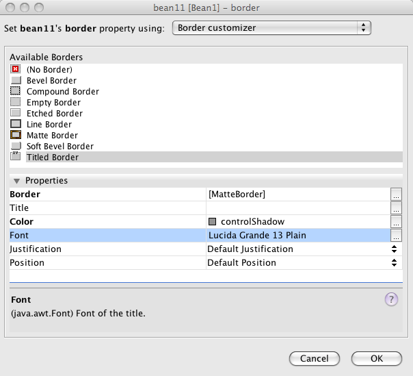
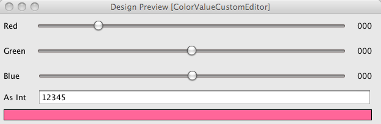

Apache NetBeans
Apache NetBeansLatest release
Integrated Property Editors in NetBeans
| This tutorial needs a review. You can edit it in GitHub following these contribution guidelines. |
- Why is this so complicated?
- Step 1: Creating Some Beans
- Creating A Class That Will Need A Custom Editor
- Creating the Plug-In
- Setting The Module To Require an IDE Restart
- Modifying the Plug-In’s Build Script
- Adding Bean.jar to Tools > Libraries
- Localizing Library and Other Names
- Including
Bean.jaron the Module’s Class Path - Adding Bean1 to the Component Palette
- Creating A Property Editor
- Registering The Property Editor Package
- NetBeans Form Editor Classloader Black Magic
- Adding A Custom Editor
- Writing XML Instead Of Serializing
- Packaging Your Component
- Wrap Up
The NetBeans IDE includes a visual editor for Swing user interfaces (UIs). Components are controlled using property editors which follow the Java Beans™ specification. This tutorial will show how to distribute components inside a NetBeans plug-in, how to provide custom property editors for individual properties or an entire class of properties of those components; and how to write property editors that are able to call into and use features of the NetBeans IDE.
Why is this so complicated?
The Java Beans specification defines how components should interact with an integrated development environment (IDE), and various classes that both an IDE and a component vendor will use to communicate with the IDE and vice-versa. The fundamental problem with the beans specification is that, when it was created and cast in stone, there were no Java IDEs. The specification tends to be in some cases naively defined (BeanInfo), and in other cases woefully underspecified (PropertyEditor) with respect to what an IDE or a component will actually need to provide a good user experience.
It is possible to create generic property editors that will integrate with an IDE without depending on that IDE — and where this makes sense, it is encouraged to do that. However, there are many cases where that is not sufficient. For example, the specification for java.beans.PropertyEditor simply allows a property editor to return a java.awt.Component to provide a custom editor dialog. In practice, that component will be shown to the user in a dialog - and if it is possible for the user to provide invalid input, good UI design dictates that the OK button for that dialog should be disabled when the input is not usable. But there is no communication path for a component to tell an IDE about such a situation. Similarly, a property editor that lets the user supply an image needs to allow the user to choose a file on disk to use. If the image is not on the classpath of the project, it needs to be copied into some directory where it can be found at runtime — but there is no way for an IDE to communicate to a third party property editor anything about files or directories or classpaths.
For these cases, NetBeans provides APIs that fill some of the gaps in the beans spec. NetBeans also provides sophisticated user interface controls that can save time and create a better user experience if used.

_ NetBeans' custom editor for Borders uses NetBeans' Nodes and Explorer API to provide the list of available borders in an embedded property sheet. _
Step 1: Creating Some Beans
The first step in packaging up some components is creating some components, so we will start by creating a simple Java project.
-
In NetBeans, select File > New Project and choose Java > Java Class Library. On the second page of the new project wizard, give the project the name
Bean. Click Finish.
-
Once the project is open, create a new Java Class called
Bean1in a package namedbean.
-
Add the following code to it (it will use a class that does not exist yet, so don’t worry about warnings for
ColorValue):
Listing 1: Bean1.java
public class Bean1 extends JComponent {
private ColorValue colorValue = new ColorValue (255, 235, 128);
public ColorValue getColorValue() {
return colorValue;
}
public void setColorValue(ColorValue val) {
ColorValue old = this.colorValue;
this.colorValue = val;
if ((old == null) != (val == null) || old != null && !old.equals(val)) {
firePropertyChange("colorValue", old, val);
repaint();
}
}
@Override
public Dimension getPreferredSize() {
return new Dimension (24, 24);
}
@Override
public Dimension getMinimumSize() {
return getPreferredSize();
}
@Override
public void paint (Graphics g) {
if (colorValue != null) {
g.setColor(colorValue.toColor());
g.fillRect(0, 0, getWidth(), getHeight());
}
}
}Creating A Class That Will Need A Custom Editor
We will start with a fairly simple (if slightly artificial) class. We need to create the ColorValue class which is the type of one of `Bean1’s properties (later we will handle a much more complex data type requiring a more sophisticated custom editor).
-
Create a new Java class,
bean.ColorValue.
-
Populate it as shown in Listing 2.
Listing 2: ColorValue
package bean;
import java.awt.Color;
import java.beans.PropertyChangeListener;
import java.beans.PropertyChangeSupport;
import java.io.Serializable;
public class ColorValue implements Serializable {
private final PropertyChangeSupport supp = new PropertyChangeSupport(this);
private int red;
private int green;
private int blue;
public ColorValue() {}
public ColorValue(int red, int green, int blue) {
if (red < 0 || red > 255) {
throw new IllegalArgumentException("" + red);
}
if (green < 0 || green > 255) {
throw new IllegalArgumentException("" + green);
}
if (blue < 0 || blue > 255) {
throw new IllegalArgumentException("" + blue);
}
this.red = red;
this.green = green;
this.blue = blue;
}
public int getBlue() {
return blue;
}
public int getGreen() {
return green;
}
public int getRed() {
return red;
}
public void setGreen(int green) {
if (green < 0 || green > 255) {
throw new IllegalArgumentException("" + green);
}
int old = this.green;
this.green = green;
if (green != old) {
supp.firePropertyChange("green", old, green);
}
}
public void setBlue(int blue) {
if (blue < 0 || blue > 255) {
throw new IllegalArgumentException("" + blue);
}
int old = blue;
this.blue = blue;
if (old != blue) {
supp.firePropertyChange("blue", old, blue);
}
}
public void setRed(int red) {
if (red < 0 || red > 255) {
throw new IllegalArgumentException("" + red);
}
int old = this.red;
this.red = red;
if (old != red) {
supp.firePropertyChange("red", old, red);
}
}
public Color toColor() {
return new Color(red, green, blue);
}
@Override
public boolean equals(Object obj) {
if (obj == null || ColorValue.class != obj.getClass()) {
return false;
}
final ColorValue other = (ColorValue) obj;
return red == other.red && green == other.green && blue == other.blue;
}
@Override
public int hashCode() {
//evenly distribute 3 byte values across 32 bits
return red + (green << 12) + (blue << 24);
}
public void removePropertyChangeListener(PropertyChangeListener pl) {
supp.removePropertyChangeListener(pl);
}
public void addPropertyChangeListener(PropertyChangeListener pl) {
supp.addPropertyChangeListener(pl);
}
}Creating the Plug-In
Now we need to create a NetBeans plug-in (module) which will do three things:
-
Integrate our class library into the IDE, so that it appears in the list of libraries available to users (found in Tools > Libraries in the IDE). While we could ask users to put the JAR for our library on the classpath of every project they use it in, this approach is much more convenient.
-
Add
Bean1to the Component Palette, so that users can simply drag the component into their user interfaces.
-
Provide our property editors for our property classes and integrate them into the IDE.
NetBeans comes with built-in support for creating modules, so setting up a new module project is quite simple:
-
Select File > New Project in the main menu.
-
In the New Project wizard, choose NetBeans Modules> Module on the first page, then click Next.
-
On the second page of the wizard, name the project
BeanLibraryModule.
-
On the third page of the wizard, enter
org.netbeans.demo.form.beanlibfor the Code Name Base, andBean Library Modulefor the display name. Check the Generate XML Layer checkbox and click Finish.
Setting The Module To Require an IDE Restart
Modules which install Java libraries — particuarly ones which add components to the component palette should always require a restart of the IDE. There are two reasons for this:
-
MS Windows File Locking-- The IDE can reload a module without restarting. However, on the Windows platform, if something is using a JAR file, it will be locked at the operating system level, so updating the module may fail with an exception if the old JAR file cannot be overwritten with the new one.
-
Form Editor Reloading — If the user has a form open, which is using a component from the JAR file, the component will not be replaced with one from the new JAR file (this could be very complicated if the file is modified but not saved). For the updated component to be used, we need to be sure both that the form is reloaded, and also that any cached class data from the JAR is discarded.
Causing a module to request that the IDE restart itself before it is installed is as simple as checking a checkbox:
-
Once the project is created, right click it and choose Properties
-
When the Project Properties dialog appears, click the Build > Packaging item in the category list to show the Packaging page of the dialog; check the Needs Restart on Install checkbox and click OK to save this setting.
Modifying the Plug-In’s Build Script
We now have a plug-in. However, we will want it to bundle the Bean project. So before going further, it would be useful to do the following:
-
Modify the module’s build script to recompile the Bean project — this way, the module will always contain the latest version of the project
-
Modify the build script to copy the Bean project into the place it needs to be to bundle
Bean.jarinto our module.
Doing these things involves overriding two targets in our module project’s build script. Ant supports a crude sort of target inheritance, in which we replace a target from one build script, but call the original target by referring to [projectname].[targetname] (the project name in this case is the name defined in the <project> tag at the top of any Ant build script).
-
Open the build script by expanding the module project in the Projects tab in the IDE, and the Important Files node under it, and double clicking the Build Script node. This corresponds to the file
build.xmlin theBeanLibraryModuledirectory which is the root of our module project.
-
Add the code found in Listing 3 to the build script, below the line
<import file="nbproject/build-impl.xml"/>.
===Listing 3: Module Build Script Changes
<target name="build-init" depends="harness.build-init">
<echo>Rebuilding Bean JAR</echo>
<ant antfile="../Bean/build.xml" target="jar" inheritall="false" inheritrefs="false"/>
<mkdir dir="release/libs"/>
<copy file="../Bean/dist/Bean.jar" todir="release/libs"/>
</target>
<target name="clean" depends="projectized-common.clean">
<echo>Cleaning and deleting copy of Bean JAR</echo>
<ant antfile="../Bean/build.xml" target="clean" inheritall="false" inheritrefs="false"/>
<delete file="${basedir}/release/libs/Bean.jar"/>
</target>Most of the targets in the build.xml for a module project are in other files — specifically, in nbproject/build-impl.xml and in $HARNESS/build.xml and $HARNESS/common.xml ($HARNESS is a directory under the copy of NetBeans you are building against, which may or may not be your IDE). To find out what file a target you are calling or overriding is in, find the build.xml in the Files tab in the IDE. Expand its node and you will see all of the targets (even ones in other files). Right click the target you are wondering about and choose Open to open the file which contains that target in the IDE. The path on disk to the file will be shown in the tooltip of its tab in the editor.
This code will build the Bean project, and copy the resulting JAR file to BeanLibraryModule/release/libs. The build script will bundle anything under the release subdir of a module into the NBM file you will deliver to your users (for example, via an update server found via Tools > Plugins).
At this point, it is a good time to make sure everything is working correctly. You can test this by right clicking BeanLibraryModule in the Projects tab, and choosing Build from the popup menu (or by pressing F11).
Adding Bean.jar to Tools > Libraries
Now we need to add some metadata to our module — no code yet — to make Bean.jar appear in the list of libraries for users who have installed our module. This involves two steps:
-
Open the module’s layer file — you can find it under the Important Files node below the module project’s node in the Projects tab (if you don’t see it, you did not check the Generate XML Layer button when you created the module project). This file provides declarative metadata to NetBeans at runtime. One of the things it can do is tell NetBeans about a library a module is installing.
-
Between the
<filesystem>tags, add the XML from listing 4.
===Listing 4: Adding Library Metadata to a Module’s XML Layer
<folder name="org-netbeans-api-project-libraries">
<folder name="Libraries">
<file name="Bean.xml" url="Bean.xml"/>
</folder>
</folder>The url attribute of the file tag is important — the XML we have entered defines a virtual file — but a file name is usually useless without some content. The URL attribute is a path, relative to the layer file, in the location where it really lives on disk. The next step is to actually create a file called Bean.xml.
-
With the layer XML file open, press Ctrl-Shift-1 (Command-Shift-1 on Macintosh) to reveal the file, inside the package
org.netbeans.demo.form.beanlibin the module project’s source code.
-
Right click that package, and choose New > Other. In the New File Wizard which opens, choose XML > XML Document.
-
Name the file
Beanon the second page of the wizard and click Finish to create the file.
-
Populate the file with the XML content in listing 5.
===Listing 5: An XML Library Definition for Bean.jar
<?xml version="1.0" encoding="UTF-8"?>
<!DOCTYPE library PUBLIC "-//NetBeans//DTD Library Declaration 1.0//EN" "https://netbeans.org/dtds/library-declaration-1_0.dtd">
<library version="1.0">
<name>Bean</name>
<type>j2se</type>
<localizing-bundle>org.netbeans.demo.form.beanlib.Bundle</localizing-bundle>
<volume>
<type>classpath</type>
<resource>jar:nbinst://org.netbeans.demo.form.beanlib/modules/ext/Bean.jar!/</resource>
</volume>
<volume>
<type>src</type>
</volume>
<volume>
<type>javadoc</type>
</volume>
</library>Note that there are placeholders in this file for Javadoc documentation and source files. If you want to include these later, just create targets in Bean/build.xml to build and zip the javadoc and sources into zip files, and modify BeanLibraryModule to call those targets in the Bean project and copy the additional files into the same directory as Bean.jar; then add <resource> tags similar to the one already in this file, but pointing to the zip files. Such files are helpful for users who want instantly available documentation, or wish to step through your component’s code in a debugger.
Localizing Library and Other Names
All user-visible strings in NetBeans are localized — put into resource-bundle files, so they can be translated into other human languages. Things which are installed declaratively via layer.xml files are no exception. You may have noticed that a localizing bundle is mentioned in some of the XML we have already entered. This is a pointer to a file named Bundle.properties, which should live in the package org.netbeans.demo.form.beanlib alongside our other files. If it does not exist, create it as follows:
-
Right click the package
org.netbeans.demo.form.beanliband choose New > Other from the popup menu.
-
Choose Other > Properties File on the first step of the New File Wizard and click Next.
-
On the second step of the wizard, name the file
Bundleand click Finish.
-
Add the content in listing 6 to the newly created resource bundle file (the content includes entries for files we are about to create in order to add
Bean1to the Component Palette).
Listing 6: Localized Names for Library and Component Palette Items
Bean=Bean
FormDesignerPalette/Bean=Beans!
NAME_bean-Bean1=The Bean
HINT_bean-Bean1=This is a BeanAt this point, we have a working module to bundle Bean as a library. To try it out, right click the Bean Library Module project and choose Run. This will start another copy of NetBeans. When it is started, look for your library in the library manager dialog that opens when you select Tools > Libraries from the main menu.
Including Bean.jar on the Module’s Class Path
We are bundling the JAR file as a library. However, if we want property editors which can talk to both our Java Bean classes and to NetBeans itself, we will need to put Bean.jar onto our module’s classpath as well. NetBeans is very strict about what JARs a module can see classes from, and by default, a library is for use in the projects a user creates, not for loading in to the VM NetBeans is running in. So we need to explicitly include Beans.jar in our module’s classpath if we want to be able to use classes from it in our module — and if we want to provide NetBeans-aware property editors we need to do that.
Not everybody needs property editors that interact with the IDE beyond the very limited ways the Java Beans specification allows. If you are writing ordinary property editors, you can simply skip the rest of this step, then follow the later steps to add your beans to the component palette and stop there:
-
Create another Java Class Library project called BeanEditors.
-
Put the Beans project on its classpath.
-
Create the
beanspackage in the new project.
-
Write your properties (and optionally BeanInfo) there.
-
Add another
<resource>entry toBean.xmlbelow the first one, which refers toBeanEditors.jar
-
Modify the module project’s build script to build that project. too, and copy
BeanEditors.jartorelease/libs.
To add Bean.jar to the classpath of classes in your module, do the following:
-
Under the Important Files node under the Bean Library Module project, double click the node Project Metadata to open the project’s
nbproject/project.xmlfile in the editor.
-
Add the code in listing 7 to the bottom of this file, just above the closing
</data>tag.
-
Build the Bean Library Module project, to ensure that the JAR is where it needs to be.
-
Shut down and restart the IDE (module projects are not terribly intelligent about rescanning the classpath when the project metadata is manually modified, so you need to do this to have code-completion and parsing work in the editor later, when you use classes from
Bean.jarin your module. This may be improved in future release of NetBeans).
Listing 7: Adding Bean.jar to our Module’s Classpath
<class-path-extension>
<runtime-relative-path>ext/Bean.jar</runtime-relative-path>
<binary-origin>../Bean/dist/Bean.jar</binary-origin>
</class-path-extension>The "runtime relative path" is the path to Bean.jar from the location of the module JAR at runtime. The NBM file which is created when you right click the module project and choose Create NBM is unpacked onto disk when the user installs it. You can build the NBM and then expand in the Files tab in the IDE to browse its contents. You will find the module JAR under the modules/ folder in the NBM. You will also find modules/ext/Bean.jar there — Bean.jar is added to the module’s classpath using the standard Java mechanism of including Class-Path: ext/Bean.jar in the module’s JAR manifest.
Adding Bean1 to the Component Palette
We have our library embedded in our module — next we need to put our component on the Component Palette, so users will be able to drag and drop it into their user interfaces. Doing that is quite simple, and very similar to the way we added Bean.jar as a library — it will again involve editing the layer.xml file, adding a reference to an external XML file and then creating that file.
-
Open the
layer.xmlfile, either by clicking Important Files > XML Layer under your project, or the node forlayer.xmlin the packageorg.netbeans.demo.form.beanlib.
-
Add the code in listing 8 after the initial
<filesystem>tag.
-
Create a new XML file called
Bean1_paletteItem.xmlnext to thelayer.xmlfile in the same package.
-
Replace the new XML file’s contents with the XML code in listing 9.
Listing 8: Adding a palette_item file to the layer.xml
<folder name="FormDesignerPalette">
<folder name="Bean">
<attr name="SystemFileSystem.localizingBundle" stringvalue="org.netbeans.demo.form.beanlib.Bundle"/>
<file name="Bean1.palette_item" url="Bean1_paletteItem.xml"/>
</folder>
</folder>Listing 9: XML File Defining a Component on the Palette
<?xml version="1.0" encoding="UTF-8"?>
<palette_item version="1.0">
<component classname="bean.Bean1"/>
<description localizing-bundle="org.netbeans.demo.form.beanlib.Bundle"
display-name-key="NAME_bean-Bean1"
tooltip-key="HINT_bean-Bean1" />
<classpath>
<resource type="library" name="Bean"/>
</classpath>
</palette_item>At this point, the work of embedding our library and our component is done. Run the module now to try out the result — create a new project in the copy of NetBeans that starts, then use New > JPanel Form to show the form editor (aka "Matisse"). There will be a new category, Beans! on the Component Palette. Expand it, and you will see Bean1, listed as The Bean (these are the strings we defined in our Bundle.properties file). Drag it onto the form to use it.
Notice also that, after you add a Bean1 to a form, if you expand the Libraries node under the project, the Bean library has automatically been added to the project’s classpath.
The Java Beans specification allows a BeanInfo class for a component to define a localized name for it, along with icons. In the example above, we defined the localized name in the palette_item file’s definition and the Bundle.properties file. You can use either one (just leave out the line about the resource bundle in the XML file to use the BeanInfo); if you are going to need a BeanInfo anyway, you can just define it there. However, since they are Java classes, BeanInfos use memory and are an inefficient way to define this sort of thing. If possible, avoid having a BeanInfo and just use this mechanism.
If you want to provide icons via the palette_item XML file, you can do that too — just add the following lines inside the <palette_item> tags in the file, replacing the file name with a .gif or .png file name, and the path with the path in your module to the package they are in:
<icon16 urlvalue="nbres:/org/netbeans/modules/form/beaninfo/awt/panel.gif" />
<icon32 urlvalue="nbres:/org/netbeans/modules/form/beaninfo/awt/panel32.gif" />Creating A Property Editor
Now we are ready to create a property editor. We will put our editors in another package, org.netbeans.demo.form.beanlib.editors — in accordance with the Java Beans specification, that package will be registered with java.beans.PropertyEditorManager. We don’t need PropertyEditorManager to be able to find other classes that are part of our module, but are not our property editors or classes our property editors use. So keeping unrelated classes invisible to our property editors is good sense both from a perfomance and a security perspective.
-
Right-click the
org.netbeans.demo.form.beanlib.editorspackage and choose New > Java Class.
-
When the New File Wizard opens, name the class
ColorValueEditor.
-
Replace the template code that initially appears in the new Java file with the code in listing 10.
Listing 10: A PropertyEditor for ColorValue Objects
package org.netbeans.demo.form.beanlib.editors;
import bean.ColorValue;
import java.awt.Component;
import java.awt.Graphics;
import java.awt.Rectangle;
import java.beans.PropertyChangeListener;
import java.beans.PropertyChangeSupport;
import java.beans.PropertyEditor;
import org.openide.explorer.propertysheet.ExPropertyEditor;
import org.openide.explorer.propertysheet.PropertyEnv;
public class ColorValueEditor implements PropertyEditor, ExPropertyEditor {
private ColorValue value;
public void setValue(Object o) {
this.value = (ColorValue) o;
}
public Object getValue() {
return value;
}
public boolean isPaintable() {
return false;
}
public void paintValue(Graphics grphcs, Rectangle rctngl) {
throw new UnsupportedOperationException("Not supported yet.");
}
public String getJavaInitializationString() {
return "new ColorValue(" + value.getRed() + ',' +
value.getGreen() + ',' + value.getBlue() + ')';
}
public String getAsText() {
return "" + value.getRed() + ',' + value.getGreen() + ',' +
value.getBlue();
}
public void setAsText(String string) throws IllegalArgumentException {
String[] rgb = string.split(",");
if (rgb == null || rgb.length != 3) {
throw new IllegalArgumentException ("Should be in format " +
"'red,green,blue'");
}
try {
int red = Integer.parseInt(rgb[0].trim());
int green = Integer.parseInt(rgb[1].trim());
int blue = Integer.parseInt(rgb[2].trim());
setValue (new ColorValue(red, green, blue));
} catch (NumberFormatException nfe) {
throw new IllegalArgumentException(nfe);
}
}
public String[] getTags() {
return null;
}
public Component getCustomEditor() {
return null;
}
public boolean supportsCustomEditor() {
return false;
}
private final PropertyChangeSupport supp = new PropertyChangeSupport(this);
public void addPropertyChangeListener(PropertyChangeListener pl) {
supp.addPropertyChangeListener(pl);
}
public void removePropertyChangeListener(PropertyChangeListener pl) {
supp.removePropertyChangeListener(pl);
}
private PropertyEnv env;
public void attachEnv(PropertyEnv pe) {
env = pe;
}
}Registering The Property Editor Package
We now have a property editor for ColorValue objects. The next step is to register our property editor package, so that, when our module is run in the IDE, java.beans.PropertyEditorManager can find our editor and it will be used in the Property Sheet of the Form Editor.
While most of the time, the way you install things in NetBeans, so that the IDE can find your module’s classes at runtime, is declarative — using the layer.xml file and similar mechanisms — PropertyEditorManager is not part of NetBeans, it is part of the JDK. It expects registration to be done programmatically, via Java code that runs during IDE startup. Running code during startup is generally to be avoided, since it means the user will be looking at the startup splash-screen for longer, but in this case there is no other way.
To register our property editor, we need to create a subclass of org.openide.modules.ModuleInstall, and add a reference to it to our module’s JAR manifest. Fortunately, there is a file template built into NetBeans' module-writing tools that will take care of creating the subclass and adding the manifest entry — we can use that and then just add the code we need to the resulting ModuleInstall. To do that:
-
Right click the
org.netbeans.demo.form.beanlibpackage and choose New > Other from the popup menu.
-
In the New File Wizard, choose Module Development > Module Installer and click Next, then click Finish. A Java file called
Installerwill be created in the package.
-
Replace the
restored()method with the contents of listing 11
Listing 11: Registering The Property Editors Package At IDE Startup
public void restored() {
String[] old = PropertyEditorManager.getEditorSearchPath();
List <String> l = new ArrayList<String>(Arrays.asList(old));
l.add ("org.netbeans.demo.form.beanlib.editors");
PropertyEditorManager.setEditorSearchPath(l.toArray(new String[l.size()]));
}java.beans.PropertyEditorManager uses a naming convention to recognize property editors: It expects the class name of an editor for a type to be the name of the class it edits plus "Editor" (i.e. the editor class for a ColorValue must be called ColorValueEditor). PropertyEditorManager also allows you to register a specific editor class to edit a specific class. The code above would look like PropertyEditorManager.registerEditor (ColorValue.class, ColorValueEditor.class) if we took that approach.
Package name based registration has the advantage that neither the ColorValue nor the ColorValueEditor class needs to be loaded into the VM unless the user actually uses it.
NetBeans Form Editor Classloader Black Magic
At this point we are almost ready to run our module with our property editor. There is one bit of arcana left to take care of. As mentioned earlier, NetBeans does various tricks with classloaders — in particular, limiting classes a module can see to only those ones it says it needs access to.
A Swing GUI and its libraries are classes that belong to the user — they are not parts of NetBeans. The form editor takes a similar approach — Java classes used in a Swing UI are loaded into the Java Virtual Machine NetBeans is running in; however, they are loaded in their own classloader, which normally does not allow random components access to classes from a module. This has two beneficial effects:
-
A foreign Swing component cannot interfere with the operation of the rest of the IDE, just because a user dropped it on a form.
-
Misbehaving or memory-leaking components can be discarded when the form is closed and the classloader it used is discarded — limiting the potential damage a buggy component can do.
We have already set up the classpath so that our module can see classes from Bean.jar. We need to set up the reverse situation — allow our properties to call into classes in our module and the rest of NetBeans when they are loaded inside the sandbox of the classloader the form editor uses for loading the user’s components.
This is accomplished via a bit of black magic with the form editor’s classloader. The form editor allows us to define a special text file in our layer.xml file, which contains a list of classes and/or packages that should be visible to components living inside a Swing form. To accomplish this:
-
Open
layer.xmlagain in the text editor.
-
Add the XML fragment from listing 12 before the closing
</filesystem>tag.
-
Right click the
org.netbeans.demo.form.beanlibpackage, and choose New > Other.
-
In the New File Wizard, choose Other > Empty File and click Next.
-
In the second page of the New File Wizard, name the file
BeanClasses.txt(note that because we are using the Empty File template, we need to specify the file extension — normally you do not do this or you end up with file names such asFoo.xml.xml).
-
Paste the contents of listing 13 into the new text file.
Listing 12: Registering Classes That Should Be Visible in layer.xml
<folder name="org-netbeans-modules-form">
<folder name="classloader">
<folder name="system">
<file name="BeanClasses.txt" url="BeanClasses.txt"/>
</folder>
</folder>
</folder>If your property editors or components also need to be able to see classes or resources (such as images) that are part of the user’s project, you can register the class list in the folder system_with_project instead of system. If some do and some do not, register two lists, including only those that really need to see classes from the user’s project in system_with_project.
Listing 13: Listing Module Classes That Should Be Visible to Components in the Form Editor
org.netbeans.demo.form.beanlib.editors.**
bean.**Now at last we have working property editors which are registered by our module. You can run the module project, add a Bean1 to a Swing form, and the property colorValue will use our property editor.
This file can list individual classes, or it can list packages including all subpackages of those classes by using the suffix *, or limit the search to only the one specified package but using the suffix . The next step is to create a custom editor that will interact with the IDE, controlling its (NetBeans-provided) OK button.
Adding A Custom Editor
To really interact with the IDE, we should add support for a custom (pop-up window) editor for our ColorValue property. To do that:
-
Right-click the
org.netbeans.demo.form.beanlib.editorspackage and choose New > JPanel Form from the popup window.
-
In the New File Wizard that opens, name the file
ColorValueCustomEditor.
-
In the newly created JPanel form, add the following components from the Component Palette, arranging the UI as shown in figure 2 and setting the variable names as shown below (to set the name, slow-double-click the name of each component in the Inspector window, then type the new name; component type shown in parentheses):

Figure 2: Color Value Custom Editor User Interface
| redLabel (JLabel) | redSlider (JSlider) | redValue (JLabel) |
|---|---|---|
greenLabel (JLabel) |
greenSlider (JSlider) |
greenValue (JLabel) |
blueLabel (JLabel) |
blueSlider (JSlider) |
blueValue (JLabel) |
intLabel (JLabel) |
intValue (JTextField) |
sample (JLabel) |
Table 1: Component Variable Names and Types in ColorValueCustomEditor
-
Set the property Opaque to true on the property sheet for
sample.
-
Select all (shift-click) of the JSliders in the form editor, and set their
maximumproperty to255.
-
Replace the constructor of
ColorValueCustomEditorwith the content of listing 14.
-
Change the class signature of
ColorValueCustomEditorto look like listing 15, implementingChangeListenerandDocumentListener.
-
Add the code in listing 16 to
ColorValueCustomEditorto implement the listener interfaces and handle events.
Listing 14: ColorValueCustomEditor Constructor
private final ColorValueEditor ed;
public ColorValueCustomEditor(ColorValueEditor ed, PropertyEnv env) {
initComponents();
ColorValue cv = (ColorValue) ed.getValue();
if (cv != null) {
Color c = cv.toColor();
setColor(c);
intValue.setText(c.getRGB() + "");
}
env.setState(PropertyEnv.STATE_VALID);
this.ed = ed;
redSlider.getModel().addChangeListener(this);
greenSlider.getModel().addChangeListener(this);
blueSlider.getModel().addChangeListener(this);
intValue.getDocument().addDocumentListener(this);
}Listing 15: Changing the Class Signature of ColorValueCustomEditor to Implement Listeners
final class ColorValueCustomEditor extends javax.swing.JPanel implements ChangeListener, DocumentListener {Listing 16: Listener Interface Implementation for ColorValueCustomEditor
private ColorValue getPropertyValue() {
return new ColorValue(redSlider.getValue(), greenSlider.getValue(),
blueSlider.getValue());
}
private boolean inUpdate;
public void stateChanged(ChangeEvent ce) {
if (inUpdate) {
return;
}
inUpdate = true;
try {
redValue.setText(redSlider.getValue() + "");
greenValue.setText(greenSlider.getValue() + "");
blueValue.setText(blueSlider.getValue() + "");
ColorValue v = getPropertyValue();
Color c = v.toColor();
intValue.setText(c.getRGB() + "");
sample.setBackground(c);
ed.setValue(v);
} finally {
inUpdate = false;
}
}
public void insertUpdate(DocumentEvent de) {
changedUpdate(de);
}
public void removeUpdate(DocumentEvent de) {
changedUpdate(de);
}
void setColor (Color c) {
boolean old = inUpdate;
inUpdate = true;
try {
redSlider.setValue(c.getRed());
greenSlider.setValue(c.getGreen());
blueSlider.setValue(c.getBlue());
} finally {
inUpdate = old;
}
}
public void changedUpdate(DocumentEvent de) {
if (!inUpdate) {
try {
int val = Integer.parseInt(intValue.getText().trim());
setColor(new Color(val));
} catch (NumberFormatException e) {
PropertyEnv env = ed.env;
if (env != null) {
env.setState(PropertyEnv.STATE_VALID);
}
}
}
}Now we just need to modify ColorValueEditor to actually create a ColorValueCustomEditor. To do that:
-
Update the
supportsCustomEditor()andgetCustomEditor()to look like listing 17
Listing 17: Creating Our Custom Editor
public Component getCustomEditor() {
return new ColorValueCustomEditor(this, env);
}
public boolean supportsCustomEditor() {
return true;
}At this point, we are ready to run the project, and when you click on the […] button for the colorValue property of an instance of Bean1 on your form, our newly finished custom editor will open. Notice that if you type an invalid number in the text area, the OK button will become disabled.
What ColorValueEditor Does
You may have noticed that ColorValueEditor implements a NetBeans interface, org.openide.explorer.propertysheet.ExPropertyEditor, in addition to the standard JDK PropertyEditor interface. This interface, or more importantly the PropertyEnv object that is passed to it is the path for our property editor to escape the prison of the Java Beans spec and interact with the environment (the IDE) that instantiated it.
PropertyEnv is an enigmatic little class, but it offers a lot of power. In our case, we are using it very simply, just to let our custom editor control the OK button of the dialog it appears in. To do that, we call env.setState(PropertyEnv.STATE_INVALID) to disable the OK button, and env.setState(PropertyEnv.STATE_VALID) to renable it. Here are some of the other things we could do with it:
-
Delay figuring out if the user’s input is good or not until the user presses enter, by calling
env.setState(PropertyEnv.STATE_NEEDS_VALIDATION)and attaching aVetoableChangeListenerwhich can veto a change toSTATE_VALIDwhich will happen when the user presses OK -
Get the
Node.Propertyobject which created the property editor and represents the property being useful, usingenv.getFeatureDescriptor(). This is useful for passing hints to the property sheet about how an editor should behave when in the property sheet. Two useful hints are -
Call
env.getFeatureDescriptor().setValue("canEditAsText", Boolean.FALSE)to make the property non-editable inside the property sheet (so the only way to change the property is to open the custom editor). -
Call
env.getFeatureDescriptor().setValue("suppressCustomEditor", Boolean.TRUE)from aPropertyEditorsubclass, to hide the […] custom editor button on a property that would otherwise have one. -
Register an
InplaceEditor.Factorywhich can provide the UI component that is shown in the property sheet when the user edits the property without opening a custom editor (a tutorial on how to do that can be found here) -
Get the Node for the file being edited like this:
Node n = null;
for (Object o : env.getBeans()) {
if (o instanceof Node) {
n = (Node) o;
break;
}
}and use that to
* Get the file that is being edited - n.getLookup().lookup(DataObject.class).getPrimaryFile()
* Find the project that owns the file being edited and interrogate its classpath (for example, to list possible directories the user might want to save an icon file to):
FileObject fo = n.getLookup().lookup(DataObject.class).getPrimaryFile();
Project project = FileOwnerQuery.getOwner(fo);
if (project != null) } {
ClassPathProvider provider = project.getLookup().lookup(ClassPathProvider.class);
...Be aware that attachEnv() may be called more than once for your property editor. To make sure you are using the right instance of PropertyEnv, store the value from the most recent call in a field of your property editor, and pass that to the custom editor.
Writing XML Instead Of Serializing
The last thing we may want to do is more about plumbing than anything the user sees directly: When you are editing a Swing form in the NetBeans Form Editor, you are really editing two files (though you only see the Java file in the projects tab). The form editor is really an editor for an invisible (in NetBeans) XML file that sits next to the Java source file. The form editor is really an editor of that XML file. Whenever you make a change in the form editor, the data about how components are positioned and their properties is saved in that file. That file is then used to generate the initComponents() method and other code inside the non-editable blue code blocks in your Java source. Whenever the XML file changes (because you made a change in the form editor and saved the file), those blue guarded blocks are regenerated into the Java source file.
It is worth taking a look at the .form file after you have modified a ColorValue and saved the form (make sure you save it!). To do this, you will need to go outside of NetBeans and use a text editor (if on Windows, use a text editor that understands lines that end with just a carriage return character — WordPad, usually located in C:\Program Files\Windows NT\Accessories on Windows will do). What you will see is something like this:
<Property name="colorValue" type="bean.ColorValue" editor="org.netbeans.demo.form.beanlib.editors.ColorValueEditor">
<SerializedValue value="-84,-19,0,5,115,114,0,15,98,101,97,110,46,67,
111,108,111,114,86,97,108,117,101,95,6,-80,34,96,
_[remainder omitted]_
</Property>What are all of these numbers? This is a serialized object. The form editor knows nothing about your component, but needs some way to save the state of our ColorValue object. The only built-in way Java has to do that is to use serialization to save the in-memory representation of your object as an array of bytes. The form editor then translates that array of bytes into a terribly inefficient comma-delimited string of numbers.
There are four big problems with using serialization to write out an object into the form file:
-
It’s inefficent — it takes up a lot of space in the file, and takes longer to read and write
-
It’s not human-readable — If a form were corrupted in some way, the user doesn’t have any chance to figure out what the value of this object actually was
-
It’s fragile — the data structure depends on the JVM’s in-memory data structure for the class. If you add a field or a method to
ColorValuein the future, the data in all existing.formfiles will be unusable. That means users will lose their components and have to recreate them, or they must never edit a form with aBean1on it again.
There is another way. Although nobody truly loves writing DOM code, you can implement XMLPropertyEditor. What happens then is:
-
When the form is saved, the form editor will make an instance of the property editor for the property
-
The property editor will be passed the XML
Documentand asked to provide a document node that contains data about the component
-
The next time the form is opened, the form editor will read the name
org.netbeans.demo.form.beanlib.editors.ColorValueEditorin the XML, make an instance of our editor, and ask it to read the XML that was written out and create an instance ofColorValueto display in the form editor.
By using XML instead of serialization, we get to choose what data we store in the .form file, how it is stored, and our code is in charge of reading it back. If new properties or fields have been added to ColorValue and we are reading an old form, we can just ignore missing values and use some reasonable default value. The result is that our users are protected from having corrupted, unopenable forms caused by upgrading to a new version of Bean.jar. To use this approach instead,
-
Modify the class signature of
ColorValueEditorso that it implementsorg.openide.explorer.propertysheet.editors.XMLPropertyEditor.
-
Implement the methods of
XMLPropertyEditoras shown in listing 18.
Listing 18: Implementing XMLPropertyEditor
public void readFromXML(Node node) throws IOException {
NamedNodeMap attrs = node.getAttributes();
Node red = attrs.getNamedItem("red");
Node green = attrs.getNamedItem("green");
Node blue = attrs.getNamedItem("blue");
if (red != null && green != null && blue != null) {
value = new ColorValue(
Integer.parseInt(red.getNodeValue()),
Integer.parseInt(green.getNodeValue()),
Integer.parseInt(blue.getNodeValue())
);
} else {
value = new ColorValue(); //use default value
}
}
public Node storeToXML(Document doc) {"
Element el = doc.createElement("ColorValue");
if (value != null) {
el.setAttribute("red", "" + value.getRed());
el.setAttribute("green", "" + value.getGreen());
el.setAttribute("blue", "" + value.getBlue());
}
return el;
}The above results in:
<Property name="colorValue" type="bean.ColorValue" editor="org.netbeans.demo.form.beanlib.editors.ColorValueEditor">
<ColorValue blue="128" green="235" red="26"/>
</Property>Packaging Your Component
Once you have your module the way you like it, the next step is to package it up so that others can install it. In NetBeans, this is extremely simple: Just right click the module project and choose Create NBM. This will create an NBM (NetBeans Module) file which includes your module and your library in a single file any user can install using Tools > Plugins. Users of your component do not have to deal with separate JAR and documentation downloads, and if they want an updated version of your components, all they have to do is install a new NBM to get them.
A useful way to deliver components is to set up your own update center. An update center has a list of NBM files for download. Users of NetBeans can just add the URL for your update center on the Settings tab in Tools > Plugins. The IDE will automatically check with your server on a regular basis to see if there are updates available.
You can make this process even easier by doing two things:
-
Automatically generate the update index using NetBeans: Just create a Module Suite project and add the module to it. Right click that project and choose Create NBMs. Along with the NBM file, you get the
update.xmlfile which is what the IDE reads to figure out if any updates are there.
-
Use Hudson to run continuous builds of your suite and publish the resulting files. This way you can completely automate publishing new versions of your module and libraries. More information about setting up automated builds with Hudson can be found here
Wrap Up
NetBeans provides a powerful way to deliver Java components to your users, including all of the documentation and sources to your users and potential users in a single easy-to-use deliverable. By creating property editors that integrate tightly with NetBeans, you can further enhance the ease of use of working with your components.